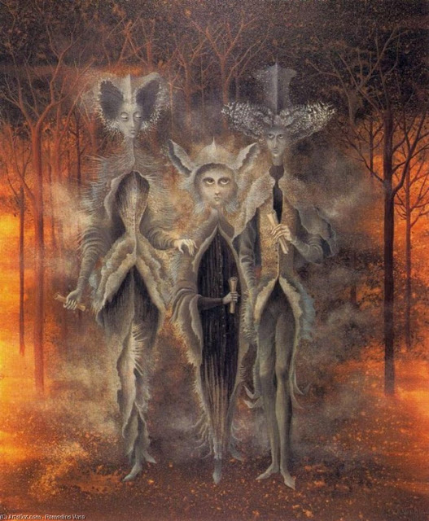

15 Договор в полнолуние
Несколько дней назад в полнолуние, когда уже светало, мне пришла в голову нелепая мысль: заключить самой с собой договор о построении звездного моста в междумирие, чтобы прийти в тот самый мир, куда меня никак не хотели брать. Я уже достаточно отчаивалась и ждала, с меня хватит! Надо брать это дело в свои руки!
Недавно у нас был следующий разговор:
- Мы действительно тебя собираемся взять в наш мир, но тебе предстоят испытания. Они могут быть очень опасными - возможно, для жизни.
- Хватит этой ерунды, вы мне и так слишком много голову морочили. Либо берите меня с собой, либо идите на все четыре стороны. Если под видом испытаний вы пытаетесь меня привлечь к какой-то работе, то так меня не обманешь. Думаете, будете меня вечно кормить завтраками и под видом испытаний заставите участвовать в какой-нибудь авантюре? Нет уж. Сначала возьмите с собой - потом договоримся.
- Хорошо. Но испытания все равно будут.
- Ладно. Но я для этого сама вообще ничего делать не буду. Всё. С меня довольно - жду, когда вы выполните свое обещание. Все остальное потом.
- Тогда давай поговорим о твоём договоре. Открой его, пожалуйста. Тот самый, о проекте архитектора и построении моста в междумирие.
- Но я не заключала с вами этот договор!
- Кто тебе сказал? А что, если мы тоже поставили под ним свою подпись?
Холодок внутри. Что за чертовщина!
Открываю договор в электронной записной книжке.
Товарищи-вурдалаки начинают комментировать каждую фразу. Довольно быстро и внятно мне объясняют, что нормальный юрист мог бы увидеть в этих фразах двусмысленность и обратить в свою пользу. В результате, если они действительно имели возможность поставить свою подпись - я им должна по этому договору по гроб жизни и они имеют право делать все, что угодно! Написано расплывчато, рамки не очерчены.
Последняя фраза: "подписи сторон". Но ведь там подразумевалась только моя подпись!
У меня внутренний ужас, слезы на глазах.
- Вот видишь. Мы имеем право не только проводить испытания, а так же делать, что хотим. А ты строй мост между мирами.
Я не знаю, что делать. Только начинаю осознавать, на что же я подписалась.
- Не беспокойся. Мы не собираемся использовать его против тебя. Хотя, стоило бы тебя проучить. На этот раз мы тебя прощаем, но если ты еще хоть раз подпишешь подобный договор.. пеняй на себя! Сейчас мы даем тебе шанс - быстро уничтожь этот договор и мы о нем забудем.
Так и делаю. Полностью стираю текст.
- Ты что наделала! - слышу голос, - ты хоть понимаешь, что ты уничтожила свой экземпляр, а наш остался при нас? Теперь ты поставила себя в совсем незавидное положение. Ты даже не будешь помнить, что именно мы имеем право делать и теперь тебе не с чем подойти к юристу и задать вопрос.
- Но вы же сами сказали уничтожить договор! - воскликнула я в слезах.
- Именно! Мы сказали уничтожить договор! Но кто тебе мешал скопировать текст договора? Ведь текст - это же не документ, он не имеет юридической силы! Ты должна была это сделать.
Я понимаю, что совершила очередную ошибку.
- А теперь, успокойся и подумай. Положение незавидное. Что еще можно сделать?
Выхода я не видела. Тем не менее, начала вспоминать то, что было в договоре. А помнила я лишь последнюю строчку, на которую специально обратили моё внимание: "Подписи сторон"
ЭВРИКА!
- Стоп! Я ведь даже не обозначила стороны!
- Именно так! Если бы ты этого не поняла, нам бы пришлось действительно тебя проучить. Там же не написано, кто исполнитель, а кто заказчик. Ты поставила свою подпись. И что? Может, ты заказчик работы? Будь осторожна - этим пользуются разные нечистые на руку дельцы. Неверно указывают стороны, в результате, ты из заказчика легко можешь превратиться в исполнителя и наоборот. А иногда - чего хуже - намеренно поставят галку для подписи не в той графе и ты расписываешься за кассира или кого-то еще. В нашем случае, это единственный момент, который тебя спас: не понятно, с кого спрашивать проектирование моста.
- Это и было первое испытание?
- Считай, что да.
- Или вы меня опять обманули насчет испытаний?
- Может и обманули. Только что ты можешь сделать? У тебя разве есть рычаги воздействия на нас?
- Нет.
- Тебе есть, что нам предложить взамен, чтобы мы тебя взяли?
- А что вам нужно?
- Возможно, ничего из того, что ты можешь дать.
- Поняла. Напрасно я вас так долго просила.
- Именно. Ты могла бы ждать бесконечно, а мы бы только кормили тебя обещаниями. Поэтому в данной ситуации, как ты сама понимаешь, мы сами решаем, брать тебя или нет и когда это сделать. А до этого момента мы вправе проводить испытания. В своем договоре ты дала согласие на испытания, на применение тех мер, которые необходимы, лишь бы они были эффективными.
- Я же написала, жизненные испытания!
- А что это такое? Разве наши действия не попадают в этот разряд?
Ответить мне было нечем
- Но ведь вы же сказали, договор не имеет силы!
- Как знать.. по земным меркам - не имеет. А по нашим - вдруг да имеет? Не бойся, зла мы тебе не причиним, а вот проучить за твои глупости вполне стоило бы.
- Ладно, делайте, чего хотите! Только никакой работы я для вас выполнять не буду! На это даже не надейтесь.
- Стоп! Опять ошибка. Ты нам только что разрешила делать все, что мы только захотим. И проводить испытания и привлекать тебя к работе. Ты это понимаешь?
- Вы будете цепляться к любой фразе? Это же издевательство. Договор я на этот счет с вами не заключала. Говорю чего хочу.
- А что, если в нашем мире слово имеет больший вес, чем бумага? Да и где тот носитель, на котором мы можем заключить с тобой договор?
Я закатила глаза, затем взяла себя в руки.
- Поняла. Но я все равно не буду выполнять для вас никакую работу, пока не возьмете.
- Один вопрос: а как ты отличишь испытания от работы? Как ты определишь, работаешь ли ты на нас или нет? Подумай хорошенько.
- Уж с этим сама как-нибудь справлюсь.
- Договорились. Но имей в виду: ты сама летом нас попросила тебя учить, сделать тебя такой, как мы. Мы тебе, конечно, прощаем твои глупости, но это не значит, что тебе не придется за них отвечать. Мы сами выбираем, какие меры сочтем наиболее эффективными, чтобы научить тебя быстрее. А может, мы вообще не собираемся ничего делать и просто издеваемся. Где твой критерий проверки? Может, ты нам вовсе не нужна. Но раз ты хочешь к нам прийти, ты все равно будешь ждать, ты на крючке. Это понятно?
- Понятно.
Я уже поняла, что влипла. Эх, предупреждали же меня, что эти хитрые эльфы могут вывернуть все наизнанку и все обставить, как им хочется.
- Если ваши испытания начнут мне мешать, я смогу просто выйти из игры и хранить тайну?
- Сможешь, но нам придется стереть твою память. Только об инициации.
- А как же Эдик? Ведь я же ему кое-что рассказывала.
- Ему мы тоже закроем память на те моменты. Ты будешь помнить, что летом отдыхала на даче как и в прошлые годы. Он никогда не впомнит того дня, когда впервые тебе о нас рассказал.
- Хорошо... ой, хотела сказать, поняла!
- То-то же! Думай, чего говоришь. Хорошо означает согласие. Хотя.. ты уже произнесла это слово. Как ты уже поняла - играем по нашим правилам. Ты можешь не верить сколько угодно, что мы сотрем память, но проверить это ты все равно не сможешь... кто знает.. может, когда-то мы это уже проделывали?
